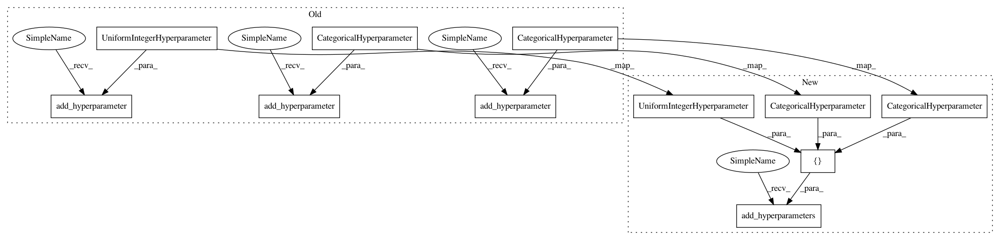

8565a366de87d82dc19c3386b4a83359be1aa275,autosklearn/pipeline/components/feature_preprocessing/feature_agglomeration.py,FeatureAgglomeration,get_hyperparameter_search_space,#Any#,58
Before Change
@staticmethod
def get_hyperparameter_search_space(dataset_properties=None):
cs = ConfigurationSpace()
n_clusters = cs.add_hyperparameter(UniformIntegerHyperparameter(
"n_clusters", 2, 400, 25))
affinity = cs.add_hyperparameter(CategoricalHyperparameter(
"affinity", ["euclidean", "manhattan", "cosine"], "euclidean"))
linkage = cs.add_hyperparameter(CategoricalHyperparameter(
"linkage", ["ward", "complete", "average"], "ward"))
pooling_func = cs.add_hyperparameter(CategoricalHyperparameter(
"pooling_func", ["mean", "median", "max"]))
affinity_and_linkage = ForbiddenAndConjunction(
ForbiddenInClause(affinity, ["manhattan", "cosine"]),
ForbiddenEqualsClause(linkage, "ward"))
After Change
@staticmethod
def get_hyperparameter_search_space(dataset_properties=None):
cs = ConfigurationSpace()
n_clusters = UniformIntegerHyperparameter("n_clusters", 2, 400, 25)
affinity = CategoricalHyperparameter(
"affinity", ["euclidean", "manhattan", "cosine"], "euclidean")
linkage = CategoricalHyperparameter(
"linkage", ["ward", "complete", "average"], "ward")
pooling_func = CategoricalHyperparameter(
"pooling_func", ["mean", "median", "max"])
cs.add_hyperparameters([n_clusters, affinity, linkage, pooling_func])
affinity_and_linkage = ForbiddenAndConjunction(
ForbiddenInClause(affinity, ["manhattan", "cosine"]),
ForbiddenEqualsClause(linkage, "ward"))
In pattern: SUPERPATTERN
Frequency: 4
Non-data size: 11
Instances
Project Name: automl/auto-sklearn
Commit Name: 8565a366de87d82dc19c3386b4a83359be1aa275
Time: 2017-02-04
Author: feurerm@informatik.uni-freiburg.de
File Name: autosklearn/pipeline/components/feature_preprocessing/feature_agglomeration.py
Class Name: FeatureAgglomeration
Method Name: get_hyperparameter_search_space
Project Name: automl/auto-sklearn
Commit Name: 8565a366de87d82dc19c3386b4a83359be1aa275
Time: 2017-02-04
Author: feurerm@informatik.uni-freiburg.de
File Name: autosklearn/pipeline/components/regression/k_nearest_neighbors.py
Class Name: KNearestNeighborsRegressor
Method Name: get_hyperparameter_search_space
Project Name: automl/auto-sklearn
Commit Name: 8565a366de87d82dc19c3386b4a83359be1aa275
Time: 2017-02-04
Author: feurerm@informatik.uni-freiburg.de
File Name: autosklearn/pipeline/components/feature_preprocessing/feature_agglomeration.py
Class Name: FeatureAgglomeration
Method Name: get_hyperparameter_search_space
Project Name: automl/auto-sklearn
Commit Name: 8565a366de87d82dc19c3386b4a83359be1aa275
Time: 2017-02-04
Author: feurerm@informatik.uni-freiburg.de
File Name: autosklearn/pipeline/components/feature_preprocessing/fast_ica.py
Class Name: FastICA
Method Name: get_hyperparameter_search_space
Project Name: automl/auto-sklearn
Commit Name: 8565a366de87d82dc19c3386b4a83359be1aa275
Time: 2017-02-04
Author: feurerm@informatik.uni-freiburg.de
File Name: autosklearn/pipeline/components/classification/k_nearest_neighbors.py
Class Name: KNearestNeighborsClassifier
Method Name: get_hyperparameter_search_space